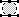
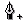
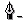
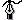

The Paths Dialog
Basically paths are a way to store bezier selections. Limiting paths to that statement misses a lot of their functionality though. A better way to see it is as a way to manage vector curves. If you are familiar with vector drawing programs such as Adobe Illustrator and Corel Draw, then paths will be something very familiar.
You will work with paths just like you work with bezier curves. Bezier curves are, as a matter of fact, Paths. You may just not be aware of the power that is hidden within them. The big difference is that you can edit your curve, you can paint with your curve, or even save, import and export the curve.
There are three command areas in the Paths dialog:
The top edit area
The path area with its right button popup menu
The bottom control area
Control area
From left to right we count:
- New Path
(
 )
) You will create a new path and activate the bezier tool. The path is named Path#X [1]. If you want to rename it you have to double click on the path in the path area. If you do so a name dialog will appear.
- Duplicate Path
(
 )
) Will duplicate the active path. To activate/mark a path you single click on it in the path area. The name is, by default, OldName#X [2].
- Path to Selection
(
 )
) Will create a selection out of a path. Notice that the path doesn't have to be closed. The created selection will simply join the endpoints with a line that will follow the curves direction in each endpoint.
- Selection to Path ()
Will create a path out of a selection. Beware of complicated selections such as selections done by quick mask or select by color. Such selections will create very complex paths which are hard to control.
- Stroke Path ()
Will stroke the path with the brush of the active device. The path doesn't have to be closed. The stoke will stroke from one endpoint to another.
- Delete Path
(
 )
) Will delete the active path.
No confirmation dialog will appear.
Edit area
To be able to edit a path, the bezier tool must be active. If it isn't, you will not be able to edit a path. In the top edit area we count from left to right.
- New Point ()
This command will add a control point to the path and make a line from the last control point to the new point. There a two ways to create a path. You can just click to add a point. This will create a curve with sharp corners. If instead you click and drag you will stretch and form the curve related to the added control point. If you create the path this way, you will end up with a curve with smooth "corners". You can, naturally, combine the two ways to create curves.
You close your path by joining the first and last point (this is done by adding the last point really close to the first point) a square sign will now appear inside the path. This command will turn the path into a selection. Clicking outside the previously closed curve will start a new bezier curve. The square path to selection command will now be deactivated and you can add more points inside the previously closed curve. You can have as many closed curves as you want, but you can only have one that isn't closed in the same Path. This may look like a limitation, but you can have as many paths as you like. This will enable you to have as many unclosed curves as you want as long as they are in separate paths.
- Add Point ()
Will add a point to your curve. The new point must be located on the curve. You can't add a point outside the curve. You will notice that your cursor will have a little + sign when you are over a curve in the image. When the + sign appears it means that you are able to add a point by clicking on the curve. The new point will be adjusted to fit the curve and the curve's shape will not be altered.
- Remove Point ()
Will remove a point in your curve. The point must be between the endpoints in a non-closed curve. If the curve is closed it can be any point within the curve. However you always have two points in the curve.
- Edit Point ()
Will allow you to adjust the curve. When you click on an anchor point, two little handles appear. If you pull the handles, they will change size and direction and shape a curve. By pressing Ctrl, you can move an anchor point anyway you like. To be able to adjust each handle separately, you have to press Shift.
Path area
The path area is where you choose the path that you want to work with. If you right click on a path, a popup menu will appear with commands for copy, paste etc. Please see Chapter 7 for references of those commands. The default name of a path is simple — it's just Path followed by a number. It can be useful to change a path's name. To change its name, simply double click on the path and a name dialog will appear.